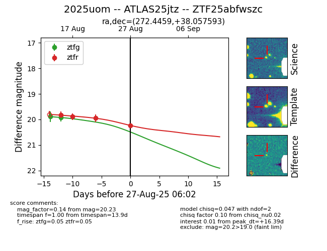

Target 2025uom at 2025-08-27 06:02, see:
FINK: fink-portal.org/ZTF25abfwszc
Lasair: lasair-ztf.lsst.ac.uk/objects/ZTF25abfwszc
ALeRCE: alerce.online/object/ZTF25abfwszc
TNS: wis-tns.org/object/2025uom
YSE: ziggy.ucolick.org/yse/transient_detail/2025uom
alt names
ZTF25abfwszc (ztf,fink)
2025uom (tns,yse)
ATLAS25jtz (atlas)
coordinates:
equatorial (ra, dec) = (272.4459,+38.05759)
galactic (l, b) = (64.9227,+24.06409)
photometry
last ztfg=19.92, ztfr=20.23
2 ztfg, 4 ztfr detections
